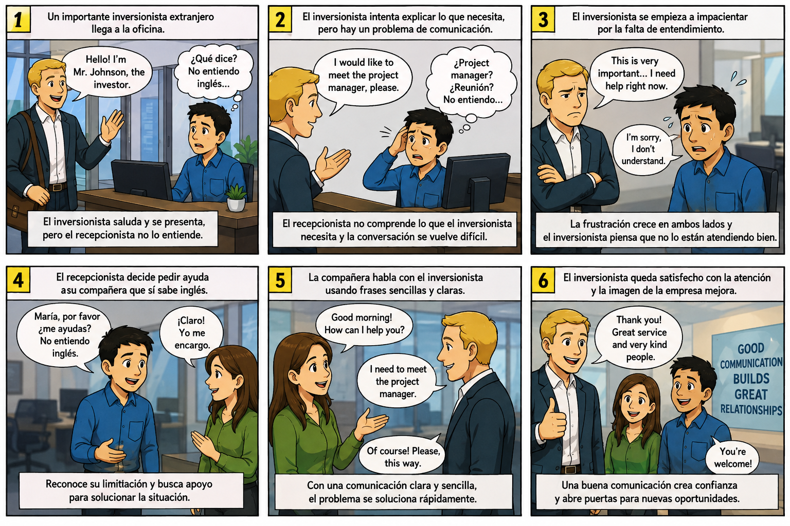

A complete interactive guide for office situations, communication barriers, software company roles, organizational hierarchy, and English conditionals. Designed with warm colors and modern responsive design.
A story about an important English-speaking investor who arrives at the office, but the receptionist doesn't understand English. Six panels showing the communication barrier and how teamwork solves it.

Answer the following questions in English based on the comic story above.
The main communication problems identified are:
The impact on the company's image is significant:
These simple phrases could have prevented the crisis:
Sample reflection for students:
"Yes, I have experienced a similar situation. Last year, I was working at a customer service desk when a tourist from France came in asking for directions. I only knew a few words in French, so I felt very embarrassed and frustrated. I tried to use Google Translate on my phone, but the connection was poor. Eventually, I drew a simple map on paper, which helped a little. This experience taught me that learning basic phrases in other languages is extremely valuable, and that technology can be a great help but should not be the only resource we rely on. Since then, I have been practicing English every day."
Key lessons from such experiences:
20+ essential roles in a software development company, with English and Spanish translations.
A quick reference on how each conditional is formed, a video explanation, and real-life example sentences.
Used for general truths, facts, habits, and things that always happen under a certain condition. Both clauses use the present simple tense, and the order of the clauses can be reversed without changing the meaning.
Example: If you heat ice, it melts.
Used for real and possible situations in the future. The "if" clause describes a likely condition, and the result clause uses "will" to describe what will probably happen as a consequence.
Example: If it rains tomorrow, I will stay home.
Replace VIDEO_ID in the code with your own YouTube video ID to embed your explanation here.
Hierarchical structure of a software development company, from highest to lowest authority. Hover over any role to see details!